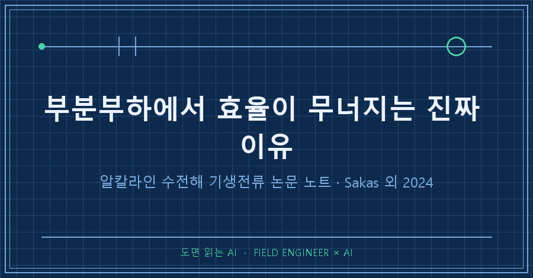
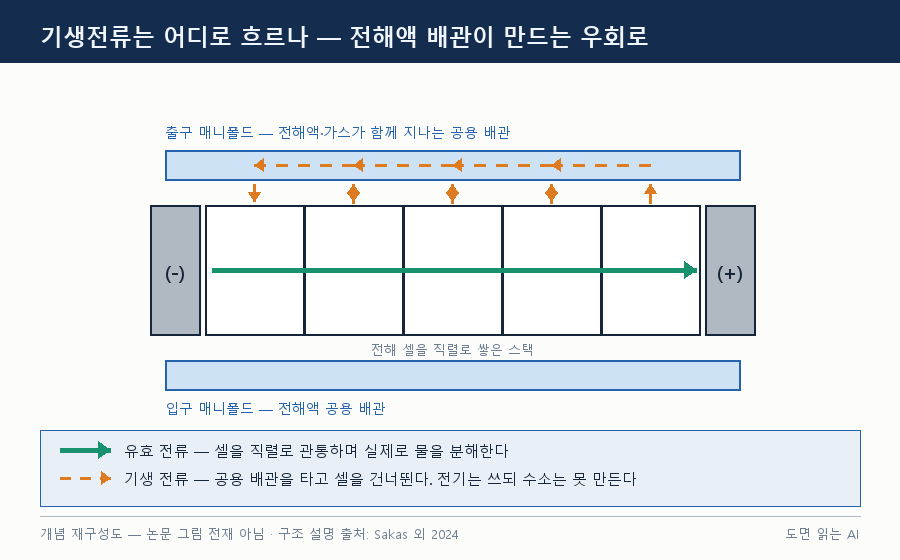
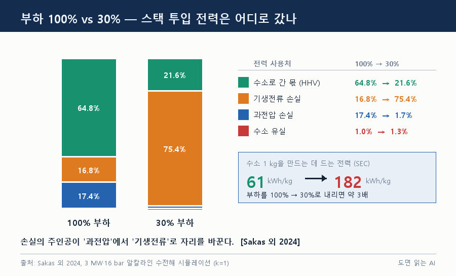
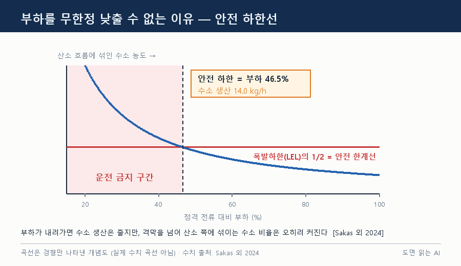
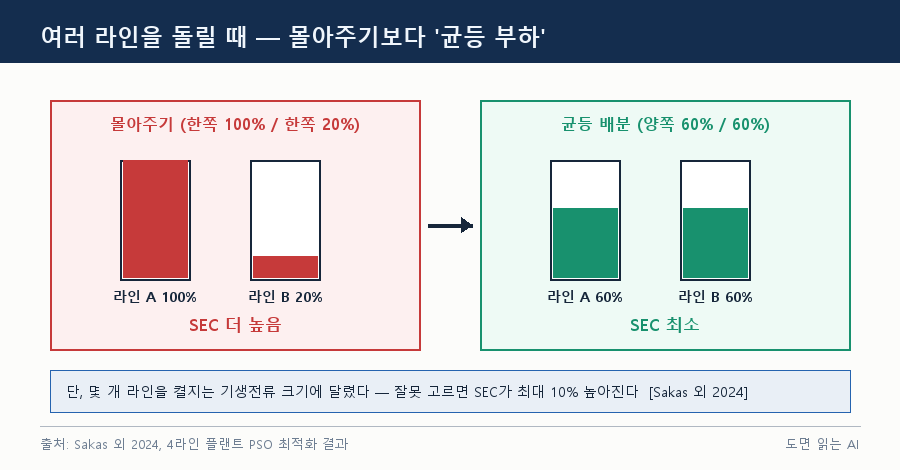

결론부터. 알칼라인 수전해 스택을 정격의 30%로 낮춰 돌리면, 스택에 넣은 전력의 75.4%가 수소를 만들지 못하고 새어 나갑니다 [Sakas 외 2024]. 정격 100%에서는 16.8%였고요. 수전해 부분부하 효율이 무너지는 자리에 범인이 있습니다. 기생전류입니다.
핀란드 LUT 대학 연구진의 2024년 《Renewable Energy》 논문을 정리한 노트예요.
1. 기생전류란 무엇인가요
기생전류(shunt current)란 셀 안의 정상 경로 대신, 셀들이 공유하는 전해액 배관을 타고 흐르는 우회 전류입니다. 누설·바이패스 전류라고도 불러요 [Sakas 외 2024].
산업용 스택은 셀을 직렬로 쌓는 바이폴라(bipolar) 구조를 씁니다. 전압을 올리는 쪽이 경제적이라서요. 그런데 전해액은 모든 셀에 공용 배관(매니폴드)으로 공급되고, 전해액은 전기를 통합니다. 그 배관이 셀과 셀을 잇는 '소금 다리'가 되는 거죠 [Sakas 외 2024].
피해는 전력 손실만이 아니에요. 논문은 전류효율 저하, 스택 온도 상승, 부식을 부르는 2차 반응, 전류밀도 불균일을 함께 듭니다. 직렬 셀을 50개 넘게 쌓으면 급격히 늘어난다는 선행 연구도 있고요 [Sakas 외 2024, Swiegers 외 인용].

2. 어떻게 계산했나 — 3 MW 모델과 계수 k
대상은 3 MW, 16 bar급 알칼라인 수전해 플랜트입니다. 연구진이 앞선 논문에서 만들고 핀란드의 동급 실제 플랜트로 검증한 동적 에너지·물질수지 모델을 MATLAB으로 돌렸어요 [Sakas 외 2024].
핵심 장치는 계수 k예요. 매니폴드 저항을 조절해 기생전류 크기만 따로 키우고 줄이는 손잡이입니다. k=1이 실제 플랜트 수준, k=0이면 아예 사라진 가상의 경우죠. 운전 조건은 정격 전류 9,135 A, 전해액 70 °C, 부하 30~100% 정상상태였습니다 [Sakas 외 2024].
왜 부분부하냐면, 재생에너지에 물리면 그게 기본값이라서죠. 2021년 핀란드 남동부의 풍력(3.76 MW)·태양광(피크 3.65 MW) 실적에서 합산 출력이 3 MW를 밑도는 시간이 대부분이었어요 [Sakas 외 2024, Fig.2].
3. 결과 ① 손실 구조가 통째로 뒤집힌다
부하를 100%에서 30%로 내리자 수소 1 kg당 전력소비(SEC)가 61에서 182 kWh/kg으로 약 3배가 됐습니다 [Sakas 외 2024].
| 스택 투입 전력의 행방 | 100% 부하 | 30% 부하 |
|---|---|---|
| 수소로 간 몫 (HHV 기준) | 64.8% | 21.6% |
| 기생전류 손실 | 16.8% | 75.4% |
| 과전압 손실 | 17.4% | 1.7% |
| 산소측·탈산소기 유실 | 1.0% | 1.3% |
과전압 손실은 오히려 줄었죠. 부하를 내렸으니 당연합니다. 논문이 저부하 SEC 상승의 원인을 오로지 기생전류 하나로 돌리는 근거죠 [Sakas 외 2024].
메커니즘이 흥미롭습니다. 부하를 낮추면 이 전류를 밀어내는 힘인 스택 전압도 함께 떨어집니다. 그런데도 손실은 늘어요. 매니폴드 저항이 더 빠르게 떨어지기 때문입니다. 배관 속 가스 기포가 줄어든 탓이죠. 기포는 전기가 잘 통하지 않아서, 기포가 많던 고부하에서는 우회로가 저절로 막혀 있던 셈입니다 [Sakas 외 2024].

4. 결과 ② 안전 하한선과 라인 운전 규칙
부하를 낮추는 데는 효율보다 먼저 걸리는 벽이 있어요. 안전입니다.
부하가 내려가면 수소 생산량은 줄지만, 격막을 넘어 산소 쪽에 섞이는 수소의 비율은 커집니다. 이 농도가 폭발하한(LEL)의 절반에 닿는 지점이 정격 전류 대비 46.5% 부하, 수소 14.0 kg/h였어요. 그 아래는 운전 금지 구간입니다. 기준 LEL은 16 bar·20 °C에서 5.24 mol-%입니다 [Sakas 외 2024].

그 바닥도 기생전류 크기에 묶여 있습니다.
| 기생전류 계수 k | 최소 투입 전력 |
|---|---|
| 0 (기생전류 없음) | 109 kW |
| 0.4 | 281 kW |
| 0.8 | 457 kW |
| 1 (실제 플랜트 수준) | 547 kW |
없애면 최소 전력이 5배 낮아집니다 [Sakas 외 2024, Table 2]. 효율 문제인 줄 알았던 게 실은 운전 유연성 문제였던 거죠.
라인을 여러 개 돌릴 때의 규칙도 나옵니다. 4라인 플랜트를 입자군집최적화(PSO)로 풀어 보니 두 기 이상 돌려야 할 땐 균등 부하로 나누는 쪽이 전체 SEC가 가장 낮았어요 [Sakas 외 2024]. 몇 기를 켤지는 k에 달렸습니다. k가 0.2 이상이면 적은 라인이 유리하지만 그 아래면 규칙이 뒤집히고, 잘못 고르면 SEC가 최대 10%까지 높아집니다 [Sakas 외 2024].

5. 이 논문이 말하지 않은 것
1. 전부 시뮬레이션입니다. 모델은 실제 플랜트로 검증됐지만, k를 0에서 1까지 바꾼 시나리오는 계산이지 실측이 아닙니다 [Sakas 외 2024].
2. 30% 미만은 돌려 보지 않았습니다. 안전 하한이 그보다 위라 실익이 적다는 이유죠.
3. '어떻게 줄이는지'는 범위 밖입니다. 직렬 셀 수 줄이기, 길고 좁은 매니폴드, 전해액 흐름 끊기 같은 선행 방법이 소개될 뿐 검증되진 않아요 [Sakas 외 2024, Grimes 외 인용].
6. FAQ
Q. 기생전류를 0으로 만들 수 있나요?
논문은 k=0을 이론적 비교군으로만 씁니다. 공용 매니폴드를 쓰는 한 경로는 남는다는 전제죠.
Q. k=0.2가 왜 분기점인가요?
그 아래에서는 기생전류 손실이 과전압 손실을 압도하지 못합니다. 그래서 SEC 곡선이 단조롭게 떨어지지 않고 국소 최솟값을 갖게 돼요 [Sakas 외 2024].
Q. PEM 방식도 결론이 같나요?
이 논문은 알칼라인만 다룹니다. 언급이 없어 확인할 수 없습니다.
---
숫자 하나만 남기면 16.8% → 75.4%입니다. 부하만 내렸는데 손실의 주인공이 바뀌었어요. 수전해 부분부하 효율을 정격 효율로 대신 말할 수 없는 이유입니다.
다음 노트에서는 이 우회 전류가 가스 크로스오버와 어떻게 얽히는지 읽어 볼 생각이에요. 여러분은 효율 이야기를 할 때 정격 성능과 부분부하 성능 중 어느 쪽을 먼저 확인하시나요?
> 출처: Sakas, G. 외 6인 (2024). Influence of shunt currents in industrial-scale alkaline water electrolyzer plants. *Renewable Energy*, 225, 120266. (CC BY 4.0) 본문 그림은 논문 도표 전재가 아니라 개념을 직접 그린 것입니다.
→ 현장 데이터로 AI를 굴리는 이야기는 [makefield.ai](https://makefield.ai)에 모아요.